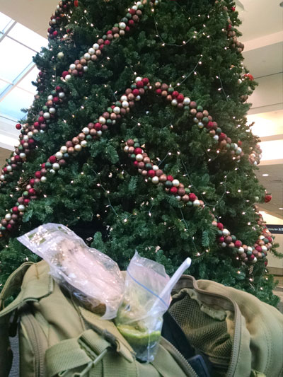
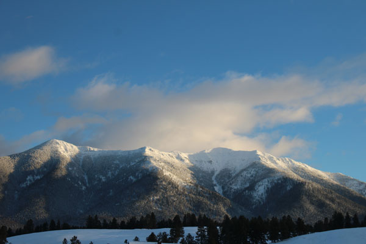
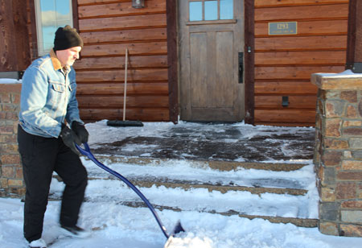
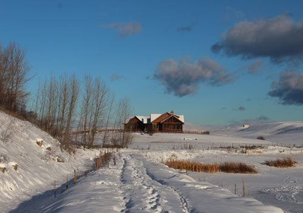
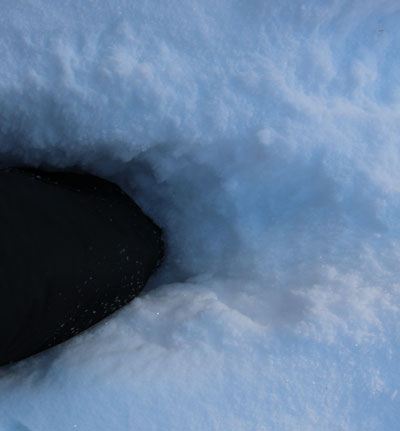
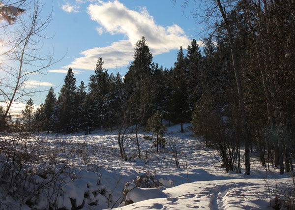
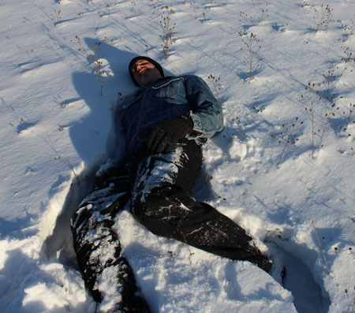
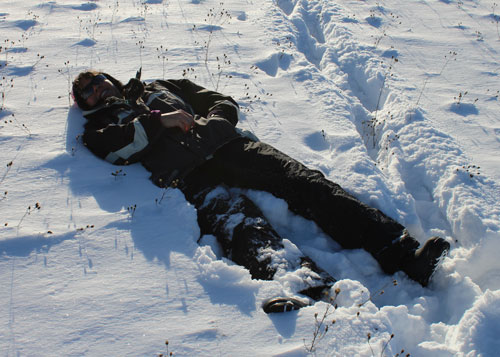
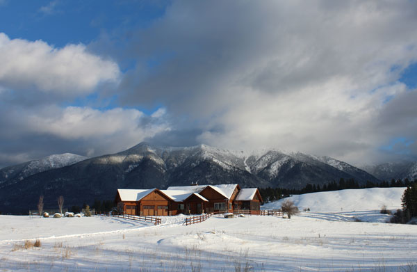
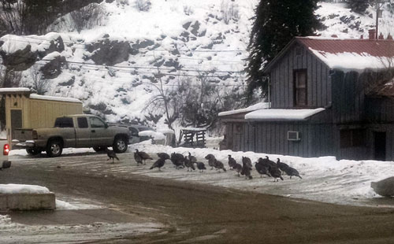

December 2016
| Eric flew to Montana on Christmas Eve, barely
making it due to delayed flight adventures. I don't have any
pictures from that time though, just a few shots I took after joining him
there on Tuesday the 27th. All the snow was a bit of a shock to me,
as we'd had several days of high 60 degree temps in Oklahoma. I
hadn't needed a coat for days and then I was slipping in the snow.
It was beautiful there though, and we had a very nice trip. |
|
|  |
I had a 4-hour layover in MSP on my way up there. Here I am hiding behind a huge Christmas tree, seeking a quiet spot to enjoy the lunch I'd packed. MSP tip: later I discovered that there's a "quiet area" |
|
 |
 |
| Looking out the living room window the first morning | Eric, clearing the front walk |
 Looking back at the house from one of our walks. Notice the frozen lake to the right. Yes, those are footprints on the lake. I still can't get used to the idea of that! |
 |
| This is just an average step taken on one of our walks, where my foot
sank up to my mid-shin in snow. It was hard going for me, but Eric had no problem. |
|
 |
 |
| One of the nice views along our walking route | Eric showing me how to collapse in the snow to make a "snow bed" |
 |
 |
| It took a little convincing, but once I was down, I saw the benefits clearly - it was comfortable! | Looking at our house and the mountains from the barn |
 |
|
| No visit to Eureka is complete without a sighting of the town
turkeys. This time they were taking over the bank parking lot. |
|